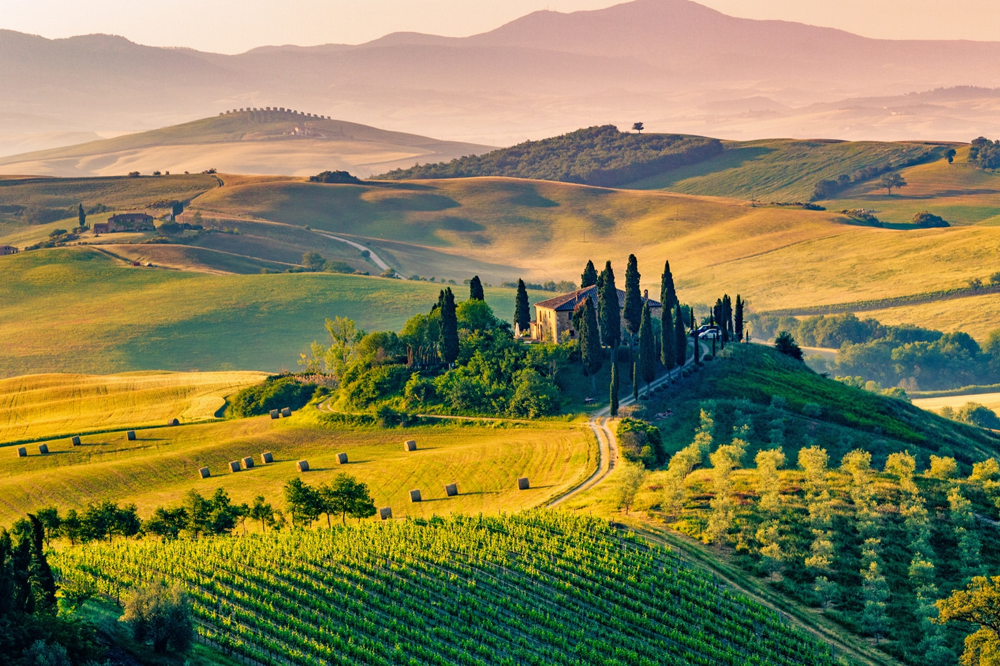

Tuscany
Central Italy represents perhaps the most commonly perceived image of the country. Tuscany, with its classic rolling countryside and the art-packed towns of Florence, Pisa and Siena, is one of Italy’s most visited regions.

Places to visit in Tuscany
- Pisa's Leaning Towerd and Campo dei Miracoli
- Cathedral of Santa Maria Assunta in Siena
- Piazza del Duomo and Renaissance Florence
- Uffizi Gallery, Florence
- The towers of San Gimignano
- Luca's walls and Centro Storico
- Pizzale Michelangiolo and San Miniato in Florence
- Etruscan and Roman Volterra
- Accademic Gallery
- Arezzo
- Montepulciano
- Medici villas and gardens

Tuscany